News
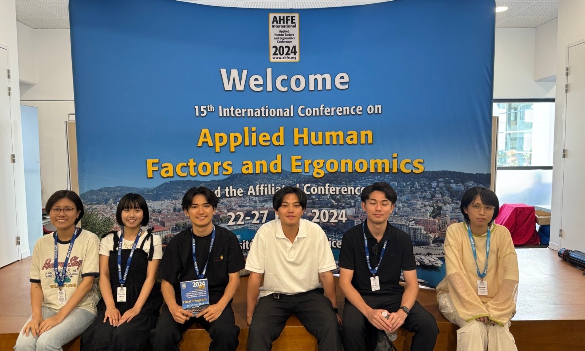
2024.07.23~08.01
AHFE in Nice
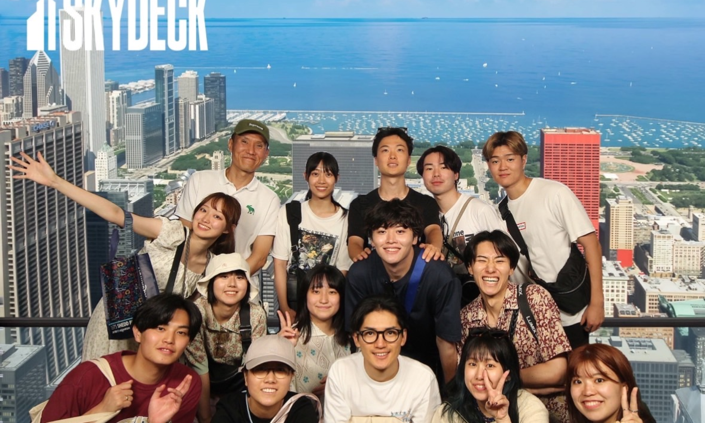
2024.07.13~07.22
gPBL in USA
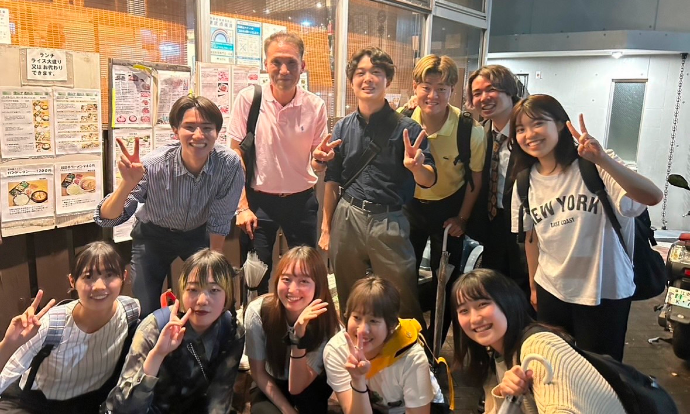
2024.07.06
卒業論文中間発表
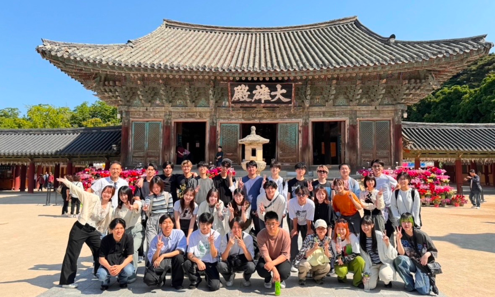
2023.05.23~06.03
gPBL in South Korea
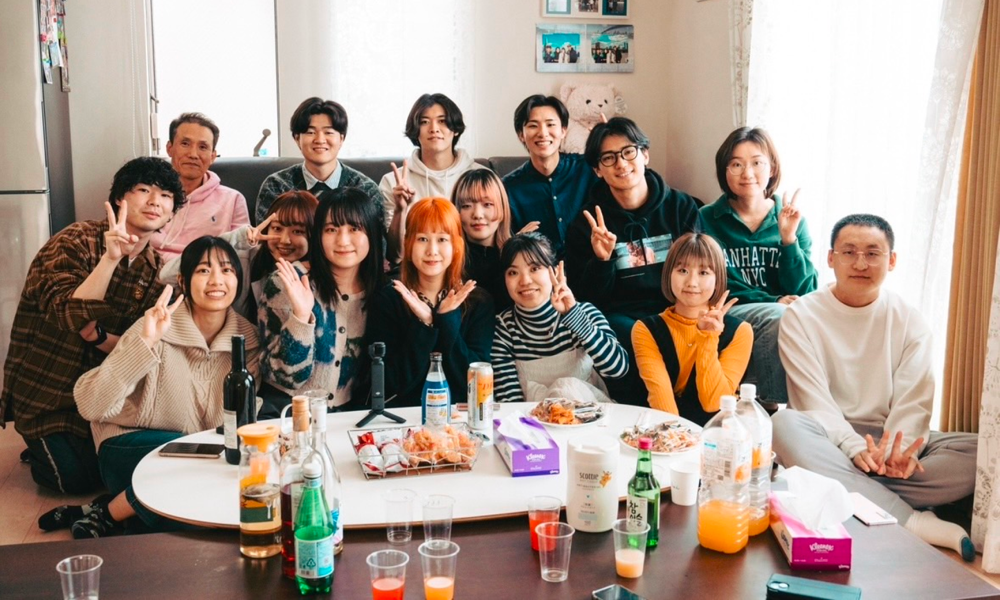
2024.5.01
ホームパーティ

2023.7.27
HCII in Copenhagen

2023.06.25~07.05
gPBL in South Korea
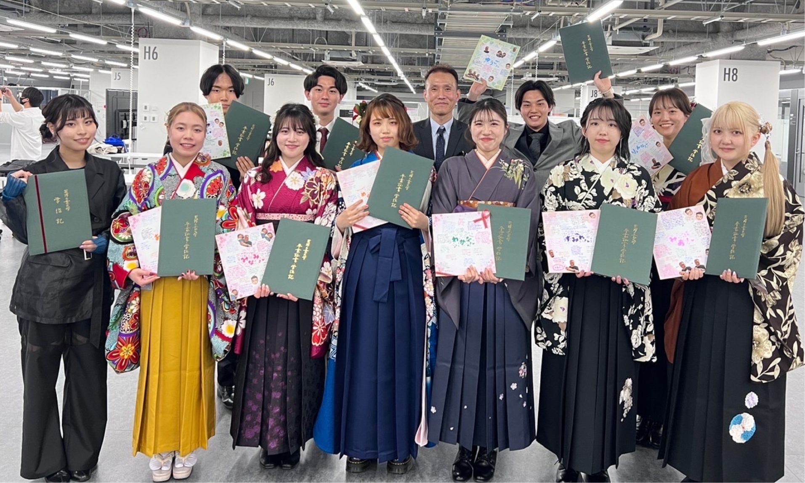
2023.3.22
卒業式
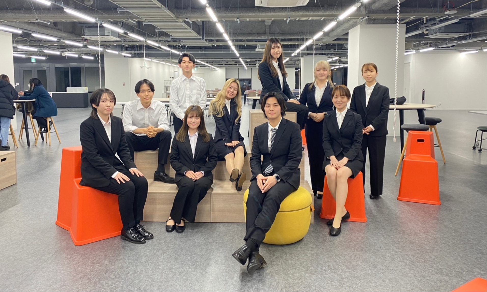
2023.01.26~01.27
卒業論文最終発表会
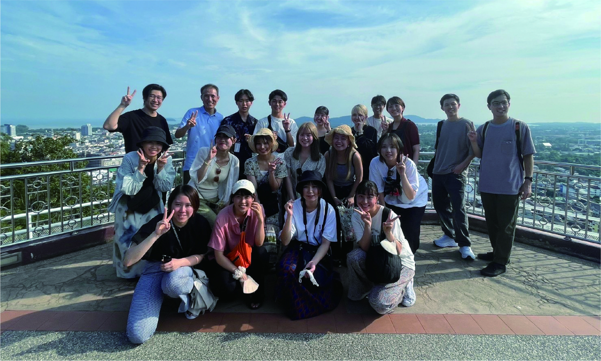
2022.10.29~11.08
gPBL in Phuket
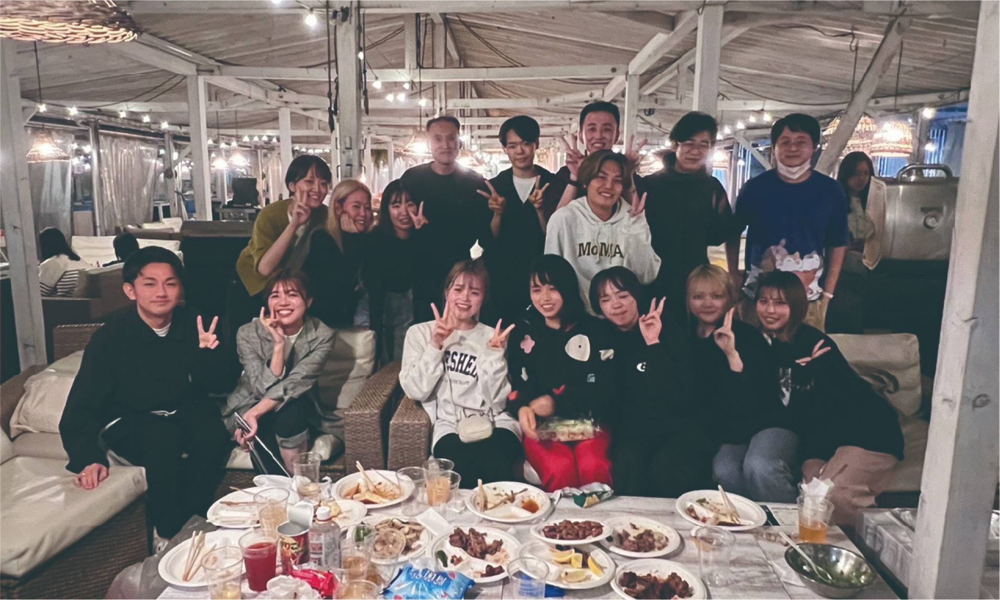
2022.10.05
BBQ in Toyosu
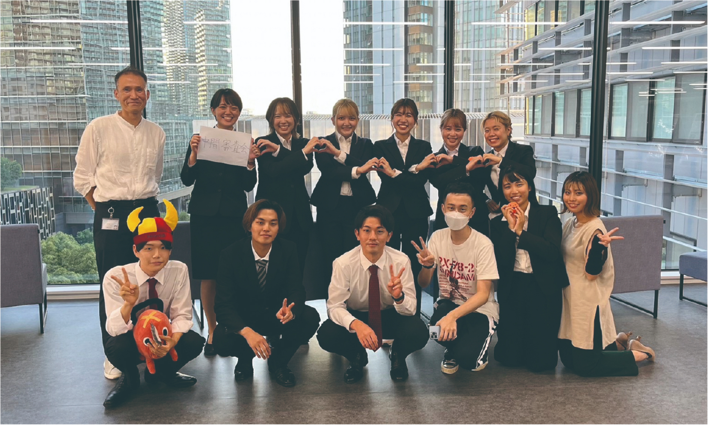
2022.10.01
卒業論文中間審査
2022.09.04~15
学会 in Europa
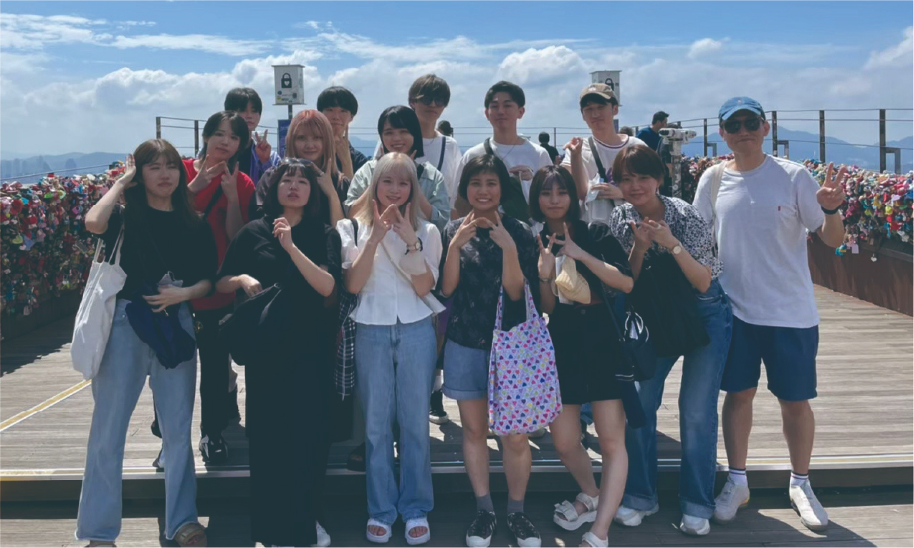
2022.08.18~26
gPBL in Seoul
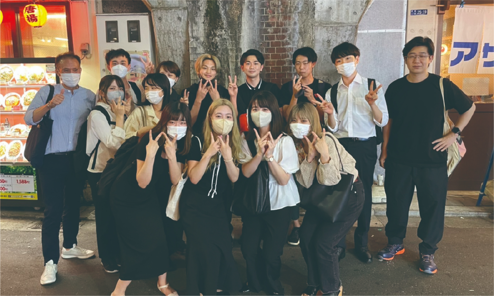
2022.07.09